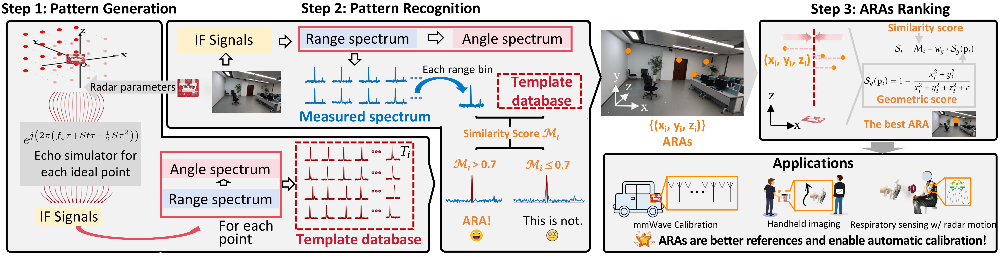
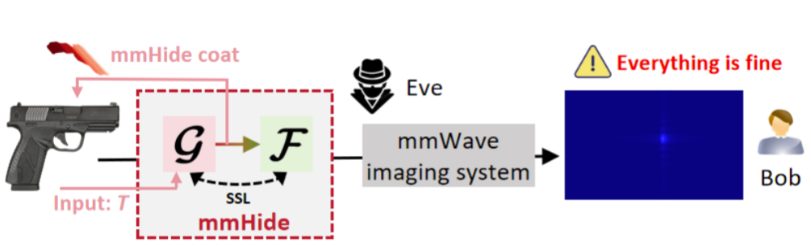
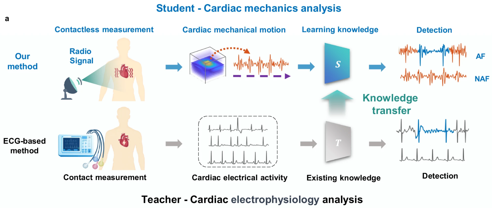
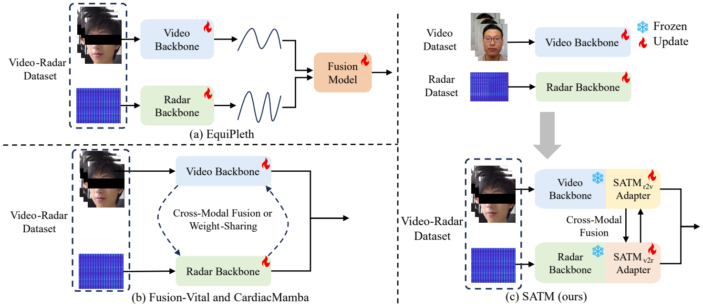
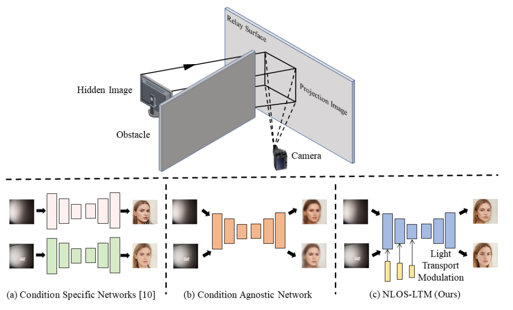
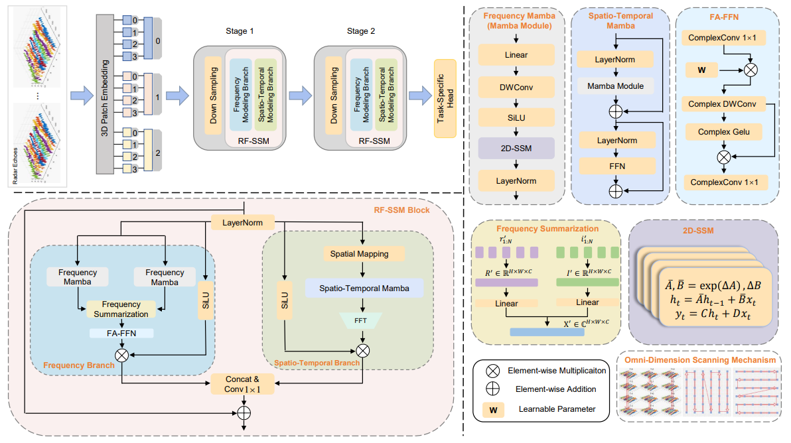
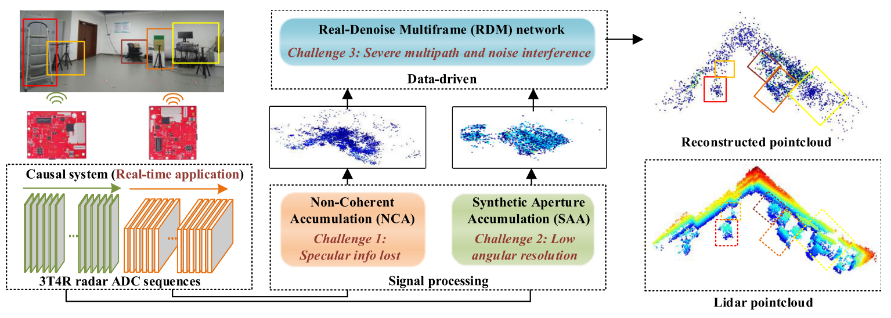
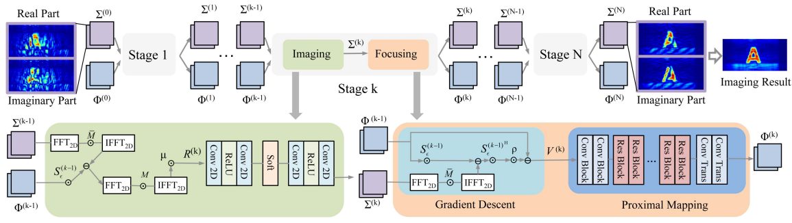
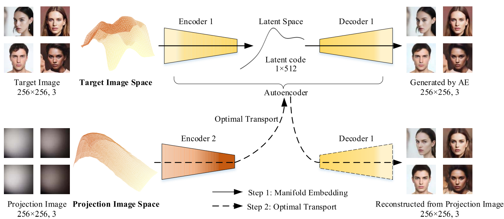

Research
My research focuses on computational imaging and sensing. I develop advanced imaging systems that can "see around corners" and perceive the world through radio waves. My recent works explore:
• Non-line-of-sight (NLOS) imaging — reconstructing hidden objects from indirect light reflections (TIP'22 TIP'25 ICASSP'25 ICME'25)
• mmWave radar imaging — high-resolution imaging and sensing using millimeter-wave signals (TMC'26 TIFS'25 TIP'24 CVPR'26)
• Biomedical and human-centric sensing — applying computational sensing to healthcare and human perception (Nature Comm.'25 ICLR'25 ICCV'25)
News
Selected Publications









Awards & Honors
Academic Services
IEEE Transactions on Image Processing (TIP), IEEE Transactions on Automation Science and Engineering (TASE), IEEE Robotics and Automation Letters (RA-L), Scientific Reports, Optics Letters, Chinese Optics Letters, Photonic Sensors
ECCV (2026), CVPR (2026), ICLR (2025-2026), ACM MM (2023-2026), ICME (2025-2026), IROS (2024), IEEE AVSS (2025)
Internet of Things and Security (IS400101), Fall 2023, USTC
I've been lucky to work closely with talented MS students: Yating Gao (USTC MS → Osaka University PhD), Jiarui Zhang (USTC MS → Meituan), Xiaolong Du (USTC MS → Alibaba), Jincheng Wu (USTC MS → ByteDance)